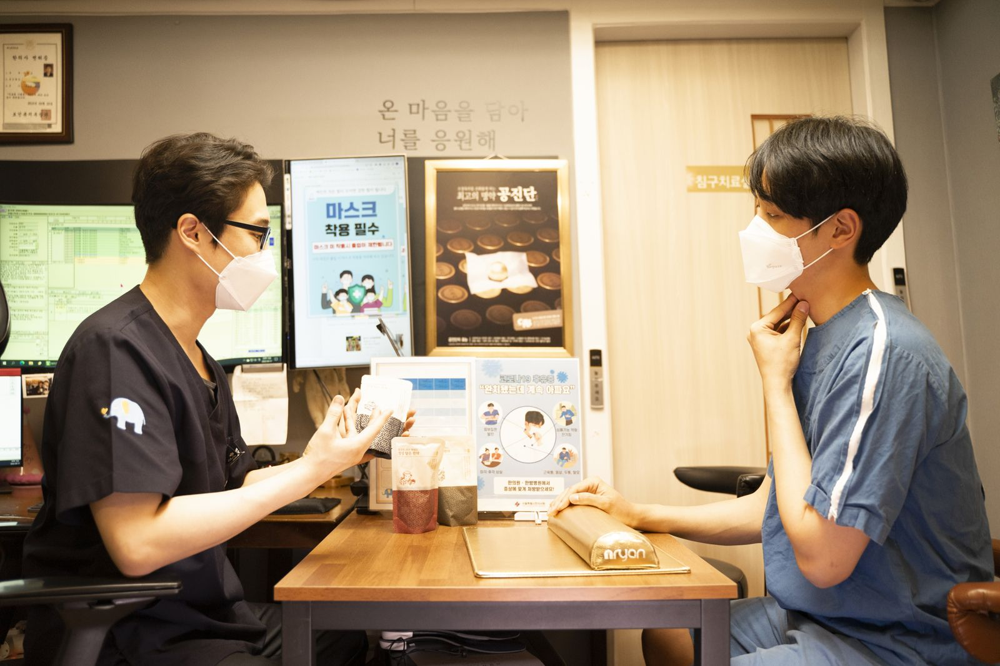

한 줄 답변
겨울철 정강이 건조와 밤 가려움은 실내 난방, 샤워 습관, 보습 시기와 관련이 있을 수 있어, 가려운 시간대와 씻는 방법, 잠의 질을 먼저 묻고 생활 습관을 함께 점검합니다.
겨울철 정강이 건조와 밤 가려움은 실내 난방, 샤워 습관, 보습 시기와 관련이 있을 수 있어, 가려운 시간대와 씻는 방법, 잠의 질을 먼저 묻고 생활 습관을 함께 점검합니다.
여쭙는 것
- 가려움이 하루 중 언제 가장 심한가요? 잠들기 전인가요, 자다가인가요?
- 샤워는 하루 몇 번, 물 온도는 어느 정도로 하시나요?
- 보습제는 언제, 얼마나 자주 바르시나요?
생활에서 해 볼 것
- 샤워는 미지근한 물로 짧게 하고 때를 세게 밀지 않기
- 씻고 물기를 가볍게 두드려 닦은 뒤 3분 안에 보습제 바르기
- 가습기나 젖은 빨래로 실내 습도를 40~60% 정도로 맞추기
한의원에서 함께 살필 것
- 가려움 때문에 잠을 자주 깨는 경우 피부 상태와 함께 잠의 흐름을 살핍니다.
- 몸이 차고 건조한 편인지, 열이 오르는 편인지 체질과 생활 리듬을 함께 살핍니다.
- 소화나 대변 상태, 물 마시는 양처럼 피부와 함께 오는 몸의 신호를 이어서 여쭙니다.
먼저 확인이 필요한 신호
- 긁지 않았는데도 붉은 반점이 넓게 퍼지는 경우
- 피부가 갈라져 피가 나거나 노란 진물이 나고 열감이 있는 경우
- 가려움과 함께 체중이 줄거나 피부·눈이 노랗게 보이는 경우
찬 바람이 불기 시작하면 정강이와 종아리가 하얗게 일어나고, 이불 속에서 따뜻해지면 가려워서 긁다가 잠을 설친다는 분이 많습니다. 상도동처럼 오래된 주택과 아파트가 섞인 동네에서는 난방 방식에 따라 실내가 많이 건조해지기도 합니다.
먼저 이렇게 여쭙니다
- 가려움이 하루 중 언제 가장 심한가요? 잠들기 전인가요, 자다가인가요?
- 샤워는 하루 몇 번, 물 온도는 어느 정도로 하시나요?
- 보습제는 언제, 얼마나 자주 바르시나요?
- 긁은 자리에 진물이나 딱지가 생긴 적이 있나요?

일상에서 먼저 해 볼 수 있는 것
- 샤워는 미지근한 물로 짧게 하고 때를 세게 밀지 않기
- 씻고 물기를 가볍게 두드려 닦은 뒤 3분 안에 보습제 바르기
- 가습기나 젖은 빨래로 실내 습도를 40~60% 정도로 맞추기
- 잘 때는 면 소재의 헐렁한 잠옷 입기
한의원에서 함께 살필 수 있는 경우
- 가려움 때문에 잠을 자주 깨는 경우 피부 상태와 함께 잠의 흐름을 살핍니다.
- 몸이 차고 건조한 편인지, 열이 오르는 편인지 체질과 생활 리듬을 함께 살핍니다.
- 소화나 대변 상태, 물 마시는 양처럼 피부와 함께 오는 몸의 신호를 이어서 여쭙니다.
진료실에서 이야기를 들은 뒤 어떤 방법이 맞을지 함께 정합니다.
이런 증상은 먼저 확인이 필요합니다
- 긁지 않았는데도 붉은 반점이 넓게 퍼지는 경우
- 피부가 갈라져 피가 나거나 노란 진물이 나고 열감이 있는 경우
- 가려움과 함께 체중이 줄거나 피부·눈이 노랗게 보이는 경우
바르고 있는 연고나 먹는 약은 처방한 의사와 상의 없이 줄이거나 끊지 않습니다. 피부 상태는 사람마다 달라, 사진 기록을 함께 보며 이야기 나누는 것이 도움이 됩니다.
자주 묻는 질문
보습제는 비싼 것을 써야 하나요?
가격보다 자주, 충분히 바르는 것이 중요합니다. 바르고 따갑거나 붉어지면 다른 제품으로 바꾸는 것이 좋습니다.
때를 밀면 가려움이 덜하지 않나요?
잠깐 시원할 수 있지만 피부 장벽이 얇아져 더 건조해질 수 있어 겨울에는 피하는 편을 권합니다.
진료 시간은 어떻게 되나요?
좋은꿈참사랑한의원 노량진점은 평일 09:30~20:00(점심 13:00~14:00), 토·일·공휴일 09:30~15:00에 진료합니다.
이 글은 일반적인 건강 정보이며 개인의 진단이나 치료를 대신하지 않습니다. 증상이 있거나 복용 중인 약이 있다면 진료를 통해 확인하세요. 치료 효과는 개인마다 다를 수 있습니다.
지난 이야기부터 이어서 묻습니다
좋은꿈참사랑한의원 노량진점은 재진 때 지난번 이야기부터 이어서 여쭙니다. 진료시간과 예약은 오시는 길에서 확인하세요.
좋은꿈참사랑한의원 노량진점은 재진 때 지난번 이야기부터 이어서 여쭙니다. 진료시간과 예약은 오시는 길에서 확인하세요.